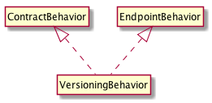

Constructs a VersioningBehavior object.
Options for the behvaior.
The name of the contract that is the target of the versioning behavior. This is required when the service has more than one contract defined.
The version of the service contract in semver format.
Generated using TypeDoc
Contract and endpoint behavior that allows an endpoint to be selected by version number as specified by the client. The version of the contract must be provided in semver format. The behavior can be applied to a contract using the Versioning decorator or to a specific endpoint by adding an instance of VersioningBehavior to the list of behaviors for the endpoint.

Example
@Contract("Calculator") @Versioning({ version: "1.0.0" }) export class CalculatorService { ... }